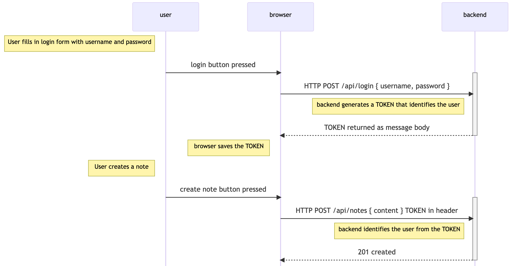
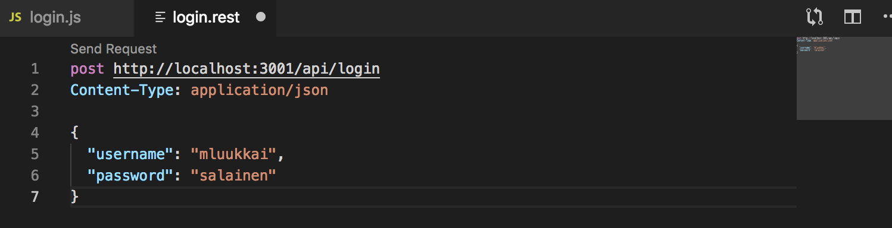
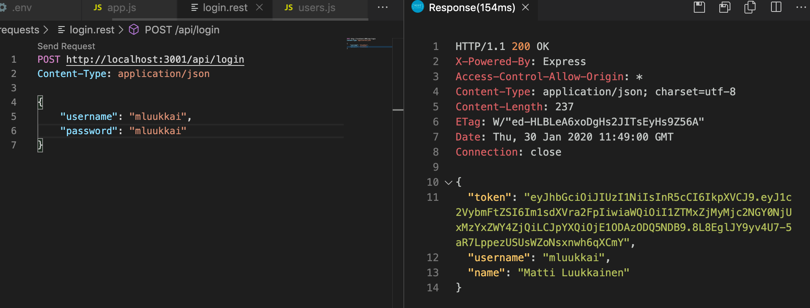
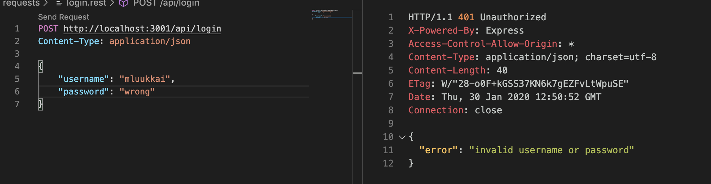
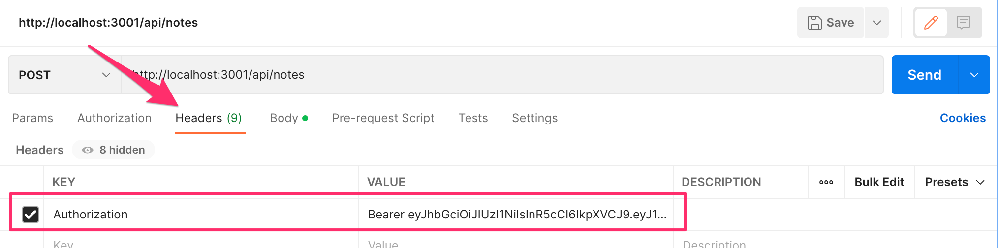
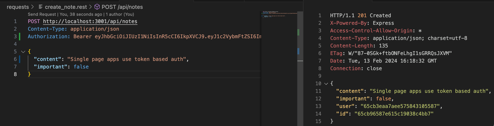

用户必须能够登录我们的应用，当用户登录后，他们的用户信息必须自动附加到他们创建的任何新笔记上。
我们现在将在后端实现对基于令牌的认证的支持。
基于令牌的认证的原则在下面的顺序图中得到描述。

- 用户通过使用React实现的登录表单开始登录
- 我们将在第五章节中把登录表单添加到前端。
- 这使得React代码将用户名和密码作为HTTP POST请求发送到服务器地址/api/login。
- 如果用户名和密码正确，服务器会生成一个token，以某种方式识别登录的用户。
- 令牌经过数字签名，使其不可能被伪造（用密码学手段）。
- 后端以一个状态代码响应，表明操作成功，并将令牌与响应一起返回。
- 浏览器保存令牌，例如保存到React应用的状态中。
- 当用户创建一个新的笔记（或做一些其他需要识别的操作），React代码将令牌与请求一起发送到服务器。
- 服务器使用该令牌来识别用户
让我们首先实现登录的功能。安装jsonwebtoken库，它允许我们生成JSON web tokens。
npm install jsonwebtoken
登录功能的代码在controllers/login.js文件中。
const jwt = require('jsonwebtoken')
const bcrypt = require('bcrypt')
const loginRouter = require('express').Router()
const User = require('../models/user')
loginRouter.post('/', async (request, response) => {
const { username, password } = request.body
const user = await User.findOne({ username })
const passwordCorrect = user === null
? false
: await bcrypt.compare(password, user.passwordHash)
if (!(user && passwordCorrect)) {
return response.status(401).json({
error: 'invalid username or password'
})
}
const userForToken = {
username: user.username,
id: user._id,
}
const token = jwt.sign(userForToken, process.env.SECRET)
response
.status(200)
.send({ token, username: user.username, name: user.name })
})
module.exports = loginRouter
- 用户开始通过使用React实现的登录表单进行登录
- 我们将在第5部分中将登录表单添加到前端
- 这会导致React代码将用户名和密码作为HTTP POST请求发送到服务器地址/api/login。
- 如果用户名和密码正确，服务器会生成一个以某种方式识别已登录用户的token。
- 该token被数字签名，使其无法伪造（通过密码学手段）
- 后端以状态码响应，表示操作成功，并在响应中返回token。
- 浏览器保存token，例如保存到React应用的状态中。
- 当用户创建新的笔记（或进行其他需要身份验证的操作）时，React代码将请求一起将token发送到服务器。
- 服务器使用token来识别用户
代码首先通过请求中附带的username从数据库中搜索用户。
const user = await User.findOne({ username })
接下来，它检查附加到请求的password。
const passwordCorrect = user === null
? false
: await bcrypt.compare(password, user.passwordHash)
因为密码本身并未保存到数据库，而是从密码计算出的hashes，所以使用_bcrypt.compare_方法来检查密码是否正确：
await bcrypt.compare(password, user.passwordHash)
如果找不到用户，或者密码不正确，请求将以状态码401 unauthorized进行响应。失败的原因在响应体中解释。
if (!(user && passwordCorrect)) {
return response.status(401).json({
error: 'invalid username or password'
})
}
如果密码正确，将使用方法 jwt.sign 创建一个token。该 token 以数字签名的形式包含用户名和用户id。
const userForToken = {
username: user.username,
id: user._id,
}
const token = jwt.sign(userForToken, process.env.SECRET)
该token已使用环境变量SECRET中的字符串作为secret进行数字签名。 数字签名确保只有知道秘密的方可以生成有效的token。 环境变量的值必须在.env文件中设置。
成功的请求将以状态码200 OK进行响应。生成的token和用户的用户名在响应体中返回。
response
.status(200)
.send({ token, username: user.username, name: user.name })
现在只需要将登录代码添加到应用中，通过将新的路由器添加到app.js即可。
const loginRouter = require('./controllers/login')
//...
app.use('/api/login', loginRouter)
让我们试试用 VS Code REST-client 登录。

它不工作。下面的内容被打印到控制台。
(node:32911) UnhandledPromiseRejectionWarning: Error: secretOrPrivateKey must have a value
at Object.module.exports [as sign] (/Users/mluukkai/opetus/_2019fullstack-koodit/osa3/notes-backend/node_modules/jsonwebtoken/sign.js:101:20)
at loginRouter.post (/Users/mluukkai/opetus/_2019fullstack-koodit/osa3/notes-backend/controllers/login.js:26:21)
(node:32911) UnhandledPromiseRejectionWarning: Unhandled promise rejection. This error originated either by throwing inside of an async function without a catch block, or by rejecting a promise which was not handled with .catch(). (rejection id: 2)
命令 jwt.sign(userForToken, process.env.secret) 失败。我们忘记给环境变量SECRET设置一个值。它可以是任何字符串。当我们在文件.env中设置了这个值，登录就成功了。
一个成功的登录会返回用户的详细资料和令牌。

一个错误的用户名或密码会返回一个错误信息和正确的状态代码。

Limiting creating new notes to logged in users
让我们更改创建新的笔记，使其只有在post请求附带有效token时才可能。然后，将笔记保存到由token识别的用户的笔记列表中。
将token从浏览器发送到服务器有几种方法。我们将使用Authorization头。该头还告诉我们使用了哪种认证方案。如果服务器提供了多种认证方式，这可能是必要的。 识别方案告诉服务器应如何解释附加的凭据。
Bearer 方案适合我们的需求。
实际上，这意味着如果token是例如字符串 eyJhbGciOiJIUzI1NiIsInR5c2VybmFtZSI6Im1sdXVra2FpIiwiaW ，那么Authorization头将具有以下值：
Bearer eyJhbGciOiJIUzI1NiIsInR5c2VybmFtZSI6Im1sdXVra2FpIiwiaW
创建新的笔记将如此改变（controllers/notes.js）：
const jwt = require('jsonwebtoken') //highlight-line
// ...
//highlight-start
const getTokenFrom = request => {
const authorization = request.get('authorization')
if (authorization && authorization.startsWith('Bearer ')) {
return authorization.replace('Bearer ', '')
}
return null
}
//highlight-end
notesRouter.post('/', async (request, response) => {
const body = request.body
//highlight-start
const decodedToken = jwt.verify(getTokenFrom(request), process.env.SECRET)
if (!decodedToken.id) {
return response.status(401).json({ error: 'token invalid' })
}
const user = await User.findById(decodedToken.id)
//highlight-end
const note = new Note({
content: body.content,
important: body.important === undefined ? false : body.important,
user: user._id
})
const savedNote = await note.save()
user.notes = user.notes.concat(savedNote._id)
await user.save()
response.json(savedNote)
})
辅助函数_getTokenFrom_将token从authorization头部分离出来。使用_jwt.verify_检查token的有效性。该方法还解码token，或返回token基于的对象。
const decodedToken = jwt.verify(token, process.env.SECRET)
如果token丢失或无效，将引发异常JsonWebTokenError。我们需要扩展错误处理中间件以处理这种特殊情况：
const errorHandler = (error, request, response, next) => {
if (error.name === 'CastError') {
return response.status(400).send({ error: 'malformatted id' })
} else if (error.name === 'ValidationError') {
return response.status(400).json({ error: error.message })
} else if (error.name === 'MongoServerError' && error.message.includes('E11000 duplicate key error')) {
return response.status(400).json({ error: 'expected `username` to be unique' })
} else if (error.name === 'JsonWebTokenError') { // highlight-line
return response.status(400).json({ error: 'token missing or invalid' }) // highlight-line
}
next(error)
}
从token解码的对象包含username和id字段，这些字段告诉服务器是谁发出的请求。
如果从token解码的对象不包含用户的身份（_decodedToken.id_未定义），则返回错误状态码401 unauthorized，并在响应体中解释失败的原因。
if (!decodedToken.id) {
return response.status(401).json({
error: 'token invalid'
})
}
当请求者的身份被解析后，执行将像以前一样继续。
现在，如果authorization头给出了正确的值，即字符串Bearer eyJhbGciOiJIUzI1NiIsInR5cCI6IkpXVCJ，其中第二个值是login操作返回的token，那么就可以使用Postman创建新的笔记了。
在Postman中，这看起来如下：

和在Visual Studio Code REST客户端中

当前应用程序代码可以在GitHub上找到，分支是part4-9。
如果应用程序有多个接口需要身份验证，JWT的验证应该分离到自己的中间件中。也可以使用现有的库，如express-jwt。
Problems of Token-based authentication
Token认证是很容易实现的，但它包含一个问题。一旦API用户，例如React应用得到一个令牌，API就会对令牌持有者产生盲目信任。如果令牌持有者的访问权被撤销了怎么办？
这个问题有两种解决方案。比较简单的是限制令牌的有效期。
loginRouter.post('/', async (request, response) => {
const { username, password } = request.body
const user = await User.findOne({ username })
const passwordCorrect = user === null
? false
: await bcrypt.compare(password, user.passwordHash)
if (!(user && passwordCorrect)) {
return response.status(401).json({
error: 'invalid username or password'
})
}
const userForToken = {
username: user.username,
id: user._id,
}
// token expires in 60*60 seconds, that is, in one hour
// highlight-start
const token = jwt.sign(
userForToken,
process.env.SECRET,
{ expiresIn: 60*60 }
)
// highlight-end
response
.status(200)
.send({ token, username: user.username, name: user.name })
})
令牌过期后，客户端应用需要获取新令牌。通常，这是通过强制用户重新登录应用程序来实现的。
应扩展错误处理中间件，以便在令牌过期的情况下给出适当的错误：
const errorHandler = (error, request, response, next) => {
logger.error(error.message)
if (error.name === 'CastError') {
return response.status(400).send({ error: 'malformatted id' })
} else if (error.name === 'ValidationError') {
return response.status(400).json({ error: error.message })
} else if (error.name === 'JsonWebTokenError') {
return response.status(401).json({
error: 'invalid token'
})
// highlight-start
} else if (error.name === 'TokenExpiredError') {
return response.status(401).json({
error: 'token expired'
})
}
// highlight-end
next(error)
}
过期时间越短，解决方案就越安全。所以如果令牌落入坏人之手，或者用户对系统的访问需要被撤销，令牌只能在有限的时间内使用。另一方面，过期时间短会给用户带来潜在的痛苦，用户必须更频繁地登录系统。
另一个解决方案是将每个令牌的信息保存在后端数据库中，并为每个API请求检查该令牌对应的访问权是否仍然有效。通过这种方案，访问权可以在任何时候被撤销。这种方案通常被称为服务器端会话。
服务器端会话的消极方面是增加了后端的复杂性，也影响了性能，因为需要对每个API请求到数据库的token有效性进行检查数据库访问相比检查token本身的有效性要慢得多。这就是为什么将一个token对应的会话保存到一个键-值数据库（如Redis）是很常见的，与MongoDB或关系型数据库相比，其功能有限，但在某些使用场景下速度极快。
当使用服务器端会话时，令牌通常只是一个随机字符串，不包括关于用户的任何信息，因为在使用jwt令牌时通常是这样的。对于每个API请求，服务器从数据库中获取有关用户身份的相关信息。另外，通常不使用授权头，而是使用cookies作为客户端和服务器之间传输令牌的机制。
End notes
代码有很多变化，这对一个快节奏的软件项目来说，造成了一个典型的问题：大多数测试都坏了。由于课程的这一部分已经充斥着新信息，我们将把修复测试留作一个非强制性的练习。
使用token认证的用户名、密码和应用程序必须始终通过HTTPS使用。我们可以在我们的应用程序中使用Node HTTPS服务器（它需要更多的配置），而不是HTTP服务器。另一方面，我们应用程序的生产版本在Fly.io上，所以我们的应用程序保持安全：Fly.io将浏览器和Fly.io服务器之间的所有流量通过HTTPS路由。
我们将在下一部分中实现对前端的登录。
**注意：**在这个阶段，在部署的笔记应用中，预计创建笔记的功能将停止工作，因为后端登录功能尚未与前端链接。